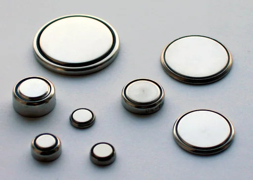

Ce diagnostic occupe le huitième rang de fréquence et le rang d'exclusion E3 (corps étranger agressif) dans la Phase A de l'écoulement nasal.
DX.8 — Corps étranger nasal
Le corps étranger nasal se suspecte devant tout écoulement unilatéral d'un jeune enfant, surtout s'il est fétideS3S4. Une pile bouton ou deux aimants imposent une extraction immédiate, car ils nécrosent ou perforent la cloison en quelques heuresS1S6. Les autres objets s'extraient le plus souvent aux urgences, patient assis, sans oto-rhino-laryngologiste (ORL), par l'une des quatre méthodes du protocole des Hôpitaux universitaires de Genève (HUG)S1.
1. Définition
Le corps étranger nasal est un objet introduit dans une fosse nasale, le plus souvent par un jeune enfant, où il reste logéS3S1. Il devient agressif lorsqu'il s'agit d'une pile bouton ou de deux aimants placés de part et d'autre de la cloisonS1.
2. Épidémiologie (Suisse, puis Europe)
Aucune incidence suisse n'a été trouvée dans les sources lues, bien que le protocole des HUG fasse du nez la cavité qui loge la plus grande proportion de corps étrangersS1. L'AP-HM le décrit comme un motif de consultation pédiatrique relativement fréquentS3. Les chiffres européens, les données sur la pile bouton et les objets en cause précisent qui consulte et pour quoi.
L'objet se loge le plus souvent entre la cloison en dedans et le cornet inférieur ou moyen en dehorsS3. Il obstrue les méats inférieur et moyen, ce qui favorise une sinusite lorsque la rétention dureS1. Les mécanismes selon l'objet et la lésion par pile bouton expliquent l'urgence propre à chaque type.
La démarche commence par la question de la pile ou des aimants, car ces objets ne tolèrent aucun délaiS1. Elle distingue ensuite trois situations : objet récent connu, objet méconnu mais symptomatique, découverte fortuiteS3. La démarche en six questions et les trois situations ordonnent la conduite.
L'anamnèse précise l'objet, l'heure d'introduction et le côté, car ces trois données fixent l'urgence et la méthodeS1S6. Chez le petit enfant, l'histoire reste souvent absente, ce qui rend le diagnostic plus difficileS4. Les questions ciblées et les drapeaux rouges guident l'entretien avec les parents.
Une rhinorrhée unilatérale fétide doit être tenue pour un corps étranger jusqu'à preuve du contraire, selon les auteurs cités par la série grecqueS4. Le tableau des syndromes oppose ce diagnostic aux autres causes d'écoulement unilatéral du LOT_030.
Le diagnostic positif repose sur la vue de l'objet, en rhinoscopie ou en endoscopie, ou sur son contact dur lors d'une tentative d'extractionS3S6. Les critères précisent ce qui suffit et ce qui ne suffit pas.
L'arbre place la pile et les aimants en tête, puis choisit la méthode selon l'occlusion de la narine et la forme de l'objetS1. L'arbre décisionnel conduit de la suspicion à l'objet extrait et contrôlé, et l'arbre d'après l'extraction fixe la suite.
11. Prise en charge selon les recommandations suisses
11.A But
Le traitement vise à retirer l'objet entier, du premier coup, sans le repousser vers le pharynx ni le transformer en corps étranger bronchiqueS3S1. Il vise aussi à limiter la lésion de la cloison quand l'objet est une pileS6.
Cette photographie en couleurs montre des piles bouton de tailles variées, objets que le médecin doit reconnaître sans délaiS8.

Le lecteur doit d'abord chercher seul les structures sur le cliché brut (piles bouton de plusieurs diamètres).
La copie annotée (piles bouton de plusieurs diamètres) porte les repères que la lecture guidée explique.
Lecture guidée.
La pile de grand diamètre, plate, ressemble à une pièce de monnaie ; seul le cliché la distingue parfois.
La petite pile, de la taille d'un appareil auditif, entre aisément dans la narine d'un enfant.
Le rebord latéral montre la jonction des deux pôles, à l'origine du halo double et de la marche d'escalier sur le cliché.
Décision. Le médecin extrait sans délai toute pile vue dans le nez, puis il contrôle la cloison en endoscopieS1S6S5.
11.C Surveillance
Le médecin vérifie la fosse vide après l'extraction, puis il fixe le suivi selon l'objet et les lésionsS3S6. La surveillance datée date chaque contrôle, avec son seuil et la conduite à tenir.
11.D Pronostic
Le pronostic reste excellent pour l'objet récent, puisque 96,3 % des enfants de la série grecque ont été traités aux urgencesS4. La pile bouton laisse en revanche une perforation de la cloison chez 17,61 % des enfants d'une série chinoise, donnée non européenneS6.
Quatre méthodes d'extraction : conditions, matériel, étapes, échec
Méthode
Condition
Matériel et étapes
Succès ou limite
Conduite si échec
Source
Pression positive
Objet complètement occlusif d'une narine
Moucher l'enfant en bouchant l'autre narine (souvent efficace après 3 ans) ; insufflation rapide par le parent dans la bouche ; ou petit masque d'un ballon de 1 L sur la bouche
Insufflation parentale réussie dans 60 à 75 % des cas
L'AIPS vise l'« Anesthésie de la surface cornéenne et conjonctivale » ; l'usage nasal reste hors AIPSAIPS 36289.
Âge
L'AIPS précise : « Ne pas utiliser chez l'enfant de moins de 2 ans »AIPS 36289.
Contre-indications
L'AIPS cite l'hypersensibilité à l'oxybuprocaïne et l'allergie croisée avec les anesthésiques de type ester de l'acide para-aminobenzoïqueAIPS 36289.
Grossesse
L'AIPS indique que « Novesin ne devrait être administré pendant la grossesse que si cela s'avère absolument nécessaire »AIPS 36289.
Allaitement
L'AIPS précise que « l'allaitement devrait être interrompu pendant l'utilisation de Novesin en période d'allaitement »AIPS 36289.
Piège
Le protocole des HUG emploie une concentration de 0,5 % absente de l'AIPS suisse trouvéeS1AIPS 36289.
12. Prévention
La prévention vise d'abord les piles et les aimants, car ils causent les lésions les plus gravesS1S5. Les mesures de prévention s'adressent aux familles, aux fabricants et aux soignants.
Un écoulement unilatéral fétide d'un jeune enfant fait chercher un corps étranger avant toute autre hypothèseS4S3.
La pile bouton et les deux aimants exigent une extraction immédiate, sans attendre une imagerieS1S6.
Le patient reste assis, et le médecin relève la pointe du nez pour voir l'objetS1.
La méthode dépend de l'objet : pression positive, pince, sonde à ballonnet ou aspirationS1.
Un objet postérieur, impacté, pénétrant ou un échec relèvent de l'ORLS1.
L'antibiotique ne remplace jamais l'extraction d'un objet ancienS4.
Une pile manquante non retrouvée dans le nez impose des radiographies du cou, du thorax et de l'abdomenS5.
14. Pièges et questions fréquentes à l'examen fédéral suisse
Le piège classique traite par plusieurs antibiotiques une rhinorrhée unilatérale fétide d'enfant sans regarder dans le nezS4. Un autre piège consiste à attendre une radiographie avant d'extraire une pile déjà visibleS6. Les questions d'entraînement reprennent ces points.
Ces questions d'entraînement sur le corps étranger nasal ne reproduisent aucun sujet officiel de l'examen fédéral.
Sources
Toutes les sources ont été lues le 13.11.2026 (Europe/Zurich) ; la date propre de chaque document figure dans sa ligne.
[S1] Sahyoun C, Hôpitaux universitaires de Genève (HUG), Service d'accueil et d'urgences pédiatriques (SAUP). Corps étranger intranasal : procédure d'extraction, février 2020, lu le 13.11.2026. https://www.hug.ch/sites/interhug/files/structures/saup_professionnels/Procedures_medicales/protocole_extraction_corps_etranger_nasal_protocol_saup.pdf
[S2] Leroquais C, Länzlinger Y, et al. HUG, Service de médecine de premier recours. Stratégie « La rhinite allergique », 2023 (diagnostic différentiel des rhinites), lue le 13.11.2026. https://www.hug.ch/sites/interhug/files/2023-09/strategie_rhinite_allergique_2023_avec_lien.pdf
[S3] Assistance publique – Hôpitaux de Marseille (AP-HM), ORL pédiatrique. Corps étrangers des fosses nasales, page non datée, lue le 13.11.2026 (source européenne, France). https://fr.ap-hm.fr/site/orl-pediatrique/rhinosinusologie/pathologies/corps-etrangers-fosses-nasales
[S4] Papadopoulos C, Dinaki K, Gravalidou I, Ioannidis R. Behind the Unilateral Rhinorrhea: Delayed Pediatric Intranasal Foreign Bodies Presenting as Chronic Sinonasal Disease and Severe Complications. Pediatr Rep 2026;18(4):112. doi:10.3390/pediatric18040112 (texte intégral lu le 13.11.2026 ; source européenne, Grèce). https://pmc.ncbi.nlm.nih.gov/articles/PMC13516713/
[S5] Académie européenne de pédiatrie (European Academy of Paediatrics, EAP). Ingestions de piles bouton : risques et prise en charge, présentation pour les professionnels de santé, d'après la prise de position de l'ESPGHAN (European Society for Paediatric Gastroenterology, Hepatology and Nutrition) de 2021, non datée, lue le 13.11.2026 (source européenne). https://kindergesundheit.de/Info/_docs/Presentation_BBI_HCP_FR.pdf
[S6] Yan S, Chen G, Zeng N, Gao C. Characteristics and treatment of pediatric nasal foreign bodies with button batteries — a retrospective study. PLoS One 2024, accepté le 08.08.2024 (texte intégral lu le 13.11.2026 ; source NON européenne, Chine, citée faute de série européenne lue sur la pile bouton nasale). https://pmc.ncbi.nlm.nih.gov/articles/PMC11361442/
[S7] BruceBlaus, Blausen.com staff (2014). Blausen 0872 UpperRespiratorySystem, schéma en couleurs, licence CC BY 3.0, Wikimedia Commons, consulté le 13.11.2026. https://commons.wikimedia.org/wiki/File:Blausen_0872_UpperRespiratorySystem.png
[S8] Wrodnigg GH (2006). Coin-cells, photographie en couleurs de piles bouton, licence CC BY-SA 2.5, Wikimedia Commons, consulté le 13.11.2026. https://commons.wikimedia.org/wiki/File:Coin-cells.jpg
[AIPS 24926] Swissmedic, information professionnelle (AIPS) Otrivin Rhume Classic® (chlorhydrate de xylométazoline), Haleon Schweiz AG, n° 24926, 44939, mise à jour Février 2025, lue le 13.11.2026. https://files.refdata.ch/simis-public-prod/MedicinalDocuments/7aa9b021e41e40498ad21af61c26b38a-fr.html
[AIPS 36289] Swissmedic, AIPS Novesin® 0,4 % (chlorhydrate d'oxybuprocaïne), collyre, n° 36289, mise à jour Août 2021, lue le 13.11.2026. https://files.refdata.ch/simis-public-prod/MedicinalDocuments/c3a023e4b57b480692a70b005b039c14-fr.html
Le contenu reprend les sources citées ; il n'a pas été validé cliniquement par un médecin.